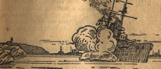
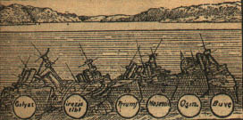
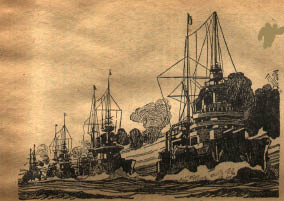

18 Mart Çanakkale hücumuna katılan Fransız donanmasından Gaulois zırhlısında bulunup o tarihî günü yaşamış olan Fransız deniz subaylarından Tabip Yüzbaşı Laurent Moreau ihtisaslarını şöyle anlatıyor:
Yükseklerden Boğaz’ın berrak sularına hâkim olan deniz uçakları sayesinde sabit mayınların bulundukları yer kat’î olarak tespit edilebildi. İngiliz havacılarının Bozcaada’da yaptıkları tecrübeler sonunda şu cihet tamamıyla anlaşılmış oldu ki, dökülen mayınlardan hiçbirinin, dikkatli bir havacının gözünden kaçmasına imkân ve ihtimal yoktur ve bunlar havadan mükemmelen görülebilmektedir.
İşte bu hava keşifleri sonunda sabit oldu ki mayınlar arasında serbest bir geçit vardır ve bu geçitten zırhlılar Çanakkale ve Kilitbahir tesirli top ateşi altına alabilecek mesafeye kadar sokulabilirler.
Beklenmedik bir hâdise: Hasta olan başkumandanımız Amiral Carden istifa ederek memlekete dönmek için resmen müracaat ettiğinden yerine muavini Kontramiral De Robeck tayin olundu. Bu haberi bize, yarın yapılacak olan kat’î hücumdan evvel, bizim gemiye dostça bir ziyaret yapmaya gelmiş olan Bouvet zırhlısının subayları, getirdiler. Hep birlikte, donanmanın başından ayrılan sakallı, biraz beli bükük ve bir hayli sağır amiralin yerine geçen genç, sporcu ve kıpkırmızı çehreli yeni kumandanı nazarlarımızda canlandırdık. Doğrusu memnun olmadık da değil, çünkü memleketine dönecek olan ihtiyar amiral, teşebbüsün muvaffakiyete ereceğinden şüphe ediyor ve işleri sürüncemede bırakıp duruyordu. Bu itibarla Carden’in ayrılışı misafirlerimiz Bouvet zabitlerinin şevkini kırmak şöyle dursun, bilâkis heyecanlarını arttırıyor ve yarın ki teşebbüsün muvaffakiyeti şerefine kadehlerini kaldırmalarına mani olamıyordu.
Misafirlerimiz veda edip ayrılırlarken ellerimiz sıkış tarzlarından gençlik heyecanlarını pekâlâ hissetmiştik. Meğer bu el sıkışlar bir ebedî veda işareti olacakmış...
Donanmanın yüksek kumandasında vuku bulan bu değişiklik plânda hiçbir tebeddül yaratmadı ve kat’î hücumun bugün yani Martın on sekizinde yapılacağı kesinleşti. Hiç şüphe yok ki mücadele çetin olacaktır. Şiddetli bombardımanlarla Boğaz’ın en dar geçidindeki tabya ve istihkâmları susturacağız:

18 Mart kurbanlarından : Ocean mayına çarpıyor.
Asya sahilinde “Çanakkale”, Avrupa kıyısında da “Kilitbahir”in dişleri sökülecek. Bu istihkâmların hepsi de, taşıdıkları topların kalibreleri bakımından, korkunç müdafaa tesisleridir.
Tabiatın sanki pek cazip Boğaz’a karşı garbın duya geldiği iştiha ve ihtirasları frenlemek ve kösteklemek için yarattığı, birbirinden ancak 1200 metre mesafedeki bu iki burun üstünde bütün müdafaa ve mukabele imkânlarını düşman kümelemiş.
Sabahın saat dokuzunda Fransız fırkası demir alıp gemilerin direkleri şapkasına harp bandıraları toka edildi ve Boğaz yolunu tuttuk. Amiral gemimiz Suffren, en önde, kıdem sırasıyla Bouvet, Gaulois, Charlemagne bir hat halinde Boğaz’a doğru ilerliyorlar. Uzaklarda, Boğaz’ın sarı topraklarına yakın bir mesafede birbirinden aynı uzaklıkta beş duman sütunu yükseliyor ufku matemli bir sise boğuyorlar. Bunların bizden evvel yola çıkmış olan İngilizlerin Queen Elizabeth, Agamemnon, Inflexible, Lord Nelson ve Prens George zırhlılarının dumanları olduğunda şüphe yok. Bu zırhlılar uzak mesafeden ilk olarak dar geçidin kalelerini top ateşi altına alacaklar.
Önümüzde gök gürültüsünü andıran top sesleri başladıktan sonra biz de Boğaz’a giriyoruz. Geminin alt kısmındaki harp mevkiine inmeden evvel göğe, lâcivert denize, dalgalı dağlara ve mor gölgelerin belirttiği vadilere son bir nazar fırlatıyorum.
Saat 11.25 oldu. Suffren, Çiftlik bataryalarına karşı birkaç mermi savurdu. Ama biz atışa başlamak için İngiliz fırkasının “Çanak” ve “Kilitbahir”i susturmaya başlamalarını bekleyeceğiz ve ancak o zaman İngilizleri desteklemek için Boğaz’a sokulacak ve menzilleri daha kısa bataryaları ateş altına alacağız.
Saat 11.53’te Fransız fırkası ikiye ayrılıyor. Suffren ile Bouvet Anadolu kıyılarına, Gaulois ile Charlemagne de Avrupa sahillerine yaklaşıyorlar. Ayaklarımın altındaki pervane sarsıntılarını birdenbire hissetmez oldum. Acaba bu bir makine sakatlığı mı?.. Hayır, Gaulois aldığı emir mucibi durdurup, İngiliz gemilerinin önündeki mevkiini almak için beklemeğe başlamış imiş. Nitekim saat 12.16 da fırkanın ikinci parçasının önderi olarak yeniden ilerlemeye başladı. Peşinden de Charlemagne geliyor. İki zırhlı nöbetleşe yer değiştirecekler ve Çanakkale mevkiine en yakın olan gemi, hedef olarak “Dardanos”a ve Anadolu kıyısındaki obüs bataryalarına ateş edecek ve bunlar susturulduktan sonra “Hamidiye” istihkâmını ateş altına alacak. Uzaktaki gemi ise, arkadaşının atışlarını zorlaştırıcı seyyar düşman bataryalarını susturacak.
Saat 12.38 de Gaulois büyük çaplı topları ve sancak (140) santimetrelikleriyle “Dardanos” a ateş açtı. Evvelâ Mezoforte[14] ateşi olarak başlayıp devamlı atışlar suretinde devam eden bu ateşten on dakika sonra istihkâmların topları sustular. (30.5)luk iki obüs istihkâm hatlarının tam üzerine isabet etmişti. Programın bu suretle birinci kısmı sona ermiş olduğundan Gaulois yerini arkadaşı Charlemagne’ye terk edecekti.

Türk Çanakkale’nin hırçın sularına gömülen düşman zırhlıları.
Bu sırada ateşimiz kesilmiş olduğundan düşman obüs bataryaları bize karşı pek şiddetli bir ateş açtılar. Düşman ateşinin girdibatları arasında sanki başı dönüyormuş gibi blockhouse adeta sendeliyor. Hilâlin salibe karşı asırlık kini bu çelik sağanağında tekrar canlanıyor ve mermiler, eski devrin mızrak ve yatağanlarından daha müthiş bir savletle, dolu gibi yağıyor. Gaulois, sintineden direklerinin tepesine kadar titriyor. Yukarıda, dördüncü güverteden, fırtına gibi, sıyrılıp geçen her obüs aşağıda çarpışmasını hissettiriyor ve bizim (30.5) luklar kadar haşin, ılık ve sert nefesini yüzlerimizde duyuyoruz.
Zırh kuşağa çarpan mermi ve serpintiler bazen boğuk, bazen de tiz madenî çığlıklar koparıyor. Bu mermileri biz mi savuruyoruz, yoksa bunları biz mi sineye çekiyoruz, anlamak kabil değil. Bu suallerin cevabını susan ağızlardan ziyade endişeli gözlerde okumak istiyoruz.
Birdenbire su geçmez kapı açılıyor ve eşikte kolları kan içinde bir dev beliriyor. Sırtında bir meşale gibi tüten bir fanilâ var. Dev, sarhoş bir adam gibi sendeliyor ve soluk bir tebessümle yarasını anlatıyor: Kıç güvertede, (30.5) ‘luk taretin yakınında büyük çaplı bir Türk mermisi patlamış ve serpintileri taretin tarassut aralıklarından içeri sızarak top başındaki nişancıları ve numara efradını yaralamış.
Etlere saplanan çelik parçaları yaranın etrafını çabucak şişirtmiş, morartmışlar.
Taretlerin ve çıplak insan vücutlarının teri ile kötü kötü kokan bu acayip operasyon salonunda çelik duvarlar o kadar kızgın ki mikropların yaşamalarına imkân yok. Kulakları sağır eden top gürültüleri ve açılıp kapanan elektrik ışığı altında parlak nikel neşterler, kızıl şimşekler savurarak yaraları tehdit ediyorlar.
Ara sıra, yaraların etrafını arayan parmakların tazyiki altında yaradan bir demir parçası fırlıyor ve sert bir ıstırap küfrü işitiliyor.
Burada yanağa saplanmış bir obüs parçası, öte tarafta dizi parçalanmış bir serpinti, beri tarafta göğsün alt kısmından girip karına kadar nüfuz etmiş sıcak çelikler... Fakat yaralıların hepsinde müşterek bir alâmet var: Yemyeşil olmuş benizler, renkleri kaçmış dudaklar, şaşkın bakışlı gözler... O gözler ki dayanılmaz bir uyku ihtiyacıyla ha şimdi kapandı, ha şimdi kapanacaklar hissini yaratıyorlar. Bazılarında biz gemi doktor ve cerrahlarının pek iyi bildiğimiz boğulma alâmetleri var: Barutun yanması yüzünden kanın kırmızı küryevatanın zehirlenmesi alâmetleri...
Hastalarımızı yatırmak lâzım. Biz de salonun, zırh kuşağa dayanan iskele duvarına birkaç gedikli tarafından ihtimamla yerleştirilmiş brandaları alıyor ve yaralıları yatırıyoruz. Şu kadar var ki, zırha çarpan serpintilerin ve obüs yağmurunun sesleri mükemmelen işitiliyor.
Ay o ne?... Daha şiddetli ve çok daha sürekli bir çarpma işittik. Anlaşılan mühim bir isabet aldık. Fakat aynı zamanda bu cehennemî gürültüyü bastıran, korkunç bir sarsıntı tavanımızı, yani zırh güverteyi tir tir titreterek sarsıyor. Hastanede birkaç kafa omuzlara gömülüyor ve bir ses yükseliyor:
- Hey Ulu Tanrım! Galiba bir gülle beynimize düştü!..
Şimdi dinamolar dairesine açılan kapı tarafından bir gidip gelme sesleri duyuyoruz. Bu dinamolar dairesinden aşağı inilince taret yatağının ve cephane deposunun bulunduğu mahalle gidilir. Bir ses avaz avaz bağırarak bir hartuç deposunun suya gömüldüğünü haber veriyor. Bu da ne?.. Acaba bir yangın başlangıcı mı?.. Belki de bir ihtiyat tedbiri olarak, cephanelik yakınında başlayan bu yangını önlemek için su muslukları açılmış olacak. Şayet vaziyet bu ise, telaş edecek bir şey yok ve tehlike önlenmiş demektir. Haydi işimize dönelim.
Lâkin hastanede neler görüyorum? Hangi beceriksiz acaba yere su devirmiş? Vallahi yerde su birikintisi fazlalaşıyor gibi geliyor bana ve galiba da yan taraftaki bölmeden sızıyor. Demek ki bizim önümüzdeki bölmeye sular dolmuş.
Şu halde işittiklerime göre baş tarafımızdan bir yara almış olacağız. Hattâ büyük bir ihtimal bu yara iskele baş omuzluğumuz tarafında olmalı, çünkü geminin iskele tarafına yavaş yavaş bayıldığını iyice duyuyorum.
Şimdi de su geçmez bölmenin dibinde, döşemeden on santimetre yükseklikteki bir delikten ince bir fıskiye gibi su fışkırmaya başladı. Demek ki bu su geçmez bölmenin kapısı arkasında su gittikçe yükseliyor, tabiî bölmeye tazyik de muttasıl artıyor. Alelacele yontulan bir tıkaç ve biraz da üstübü ile delik çabucak kapatılıp suyun sızıntısı önleniyor ama hasta ve yaralıların döşekleri de sırsıklam olmuş. Bunları vakit kaybetmeden teknenin mihverine, yani taretin motoruna yakın kısma taşımak lâzım.
İyi ama su aralıksız yükselmekte, iskele bordamıza olan meyil de artmakta berdevam. Hastaların buhranlı durumunu merkez dairesine haber vermiş olduğumuz için, verilecek emri beklemekten başka şimdilik yapacak bir şey yok.
Gemiye suların hücum edip dolduğu yara, büyük ihtimale göre, zırhın altında bulunacağından, sadece suların istilâsı nazarı dikkate alınarak bu yaranın büyüklüğü ve ehemmiyeti hakkında bir fikir peyda edebilmek nasıl kabil olur? Acaba yaramız bir obüs deliğinden mi ibaret, yoksa ehemmiyetli bir yırtık mı? Şayet bu yara basit bir delikten ibaretse tıkayıp körletmek güç olmaz. Yok böyle değil de torpilin yahut mayının husule getirdiği geniş bir yara ise, bunu kapatmak imkân dahiline sığmaz. Bilmem ne dereceye kadar hakikate uyar ama, bize öyle geliyor ki teknenin meyli artmıyor, lâkin buna mukabil zırhlının başının gittikçe suya gömüldüğü, gün gibi aşikâr.

18 Mart hücumunda Fransız filosu hüsranla neticelenecek hücumlarına geçmek üzere hat halinde seyrederlerken.
Merkez dairesinin kapısı açıldı ve bizim hastane bölmesinde de gidip gelmeler başladı. Bir takım erler ve erbaşlar yanımızdan geçerken hastanenin tahliye edileceğini söylüyor-lar ve kendileri su hücumunun derecesini anlamak için teknenin derinliklerine iniyorlar.
Bir kumanda borusundan diğerine pasaparola[15] edilerek hastanenin tahliyesi emrolundu. Bu emir, kumandanın bulunduğu blockhouse’dan (kaptan köprüsü) verilmiş. Gemide olup bitenden dakikası dakikasına, saniyesi saniyesine haberdar edilen gemi süvarisinin bu tahliye emrini vermesi de gösteriyor ki vaziyet ciddî. Herkes hastaneden çıkmaya hazırlanıyor ama, yaralılar var ne her şeyden evvel onları düşünmek lâzım. Hattâ elimizi çabuk tutup zavallıları içinde yattıkları gölcüklerden bir an evvel kurtarmak lâzım. Bu gölcüklerde pansuman kutuları şimdiden yüzmeğe başladılar bile. Hastalarımızı ilk müdavat[16] dairesine kadar çıkarabilecek miyiz; acaba oraya da mermiler yağmıyor mu? Hiç de muhafazalı olmayan bu mevkide hiçbir hasar olmadığı haberini aldık. Düşman bataryaları da artık pek fâsılalı ateş ediyorlarmış: Demek ki hastalarımızı orada barındırabileceğiz. Haydi bakalım çocuklar, ileri, merdivenlere!.. Pekâlâ! Tırmanacağımız bir kat daha kaldı!
• Buraya gelin delikanlılar!.. Hafif yaralılar otursunlar diğerleri yattıkları yerden kıpırdamasınlar.
Kimse davranmıyor.
İyi ama muayene dairesinde, muayene yatağının muşambası üzerine çökmüş olan şu erbaş da kim? Kendisini tanımıyorum. Zaten evvelce görmüş olsaydım bile, yüzünün solgunluğu o kadar acayip ki, tanımakta müşkülât çekerdim: Sabit ve haddinden fazla büyümüş göz bebekleri ve ağzın kenarından sızan beyaz köpükler, sonra yamaktan ince ve kıpkırmızı bir kan akıntısı. Kendisine kim olduğunu soruyorum, cevap vermeden yüzüme bakıyor. Hayretler içindeyim
Nihayet biri alçak sesle:
- Bouvet mürettabatından... diye fısıldıyor.
Allah, Allah! Bouvet’nin mürettebatından bir gemicinin bizim gemide ne işi var?
- Bouvet alabora olup battı da...
Ve karşımdaki omzuna elimi koyduğum vakit elbisesinin sırsıklam olduğunu görüyorum. Demek ki tedavi edeceğim zavallı, yarı yarıya boğulmuş bir gemici. Yüzerek kurtulmak için gemiden atlamış ve kuvvetten düşmeğe başladığı bir sırada çekip denizden çıkarmışlar. Bouvet’nin mürettebatındanmış!... Şu halde zırhlının yedi yüze varan mürettebatı, daha dün bizi ziyarete gelen genç, neşeli arkadaşlar, demek ki gemi ile batıp gitmişler ha!...
Kaportaya fırlıyorum. Önümde masmavi gökten, lâcivert denizden ve pembe dağlardan başka görünürde hiçbir şey yok.
Çabuk bu zavallıyı soysunlar, onu ısıtsınlar, sürekli ve şiddetli ovalamalar yapılsın!..
Biraz kendine gelince kendisinden bir şeyler sorabilir, yanındakilerden biraz malûmat elde edebilir miyim acaba?..
Yarı ölü gemicinin dudakları kilitli; yanındakilerin de fazla bir bilgileri yok. Hah işte biraz daha canlı görünen başka kazazedeler göründüler. Onlar da tir tir titriyorlar onların da gözleri hayret ve dehşetten fal taşı gibi açılmış, onlarında olandan bitenden pek haberleri yok. Zoraki tebessüm etmeğe çalışıyorlar ama, kolları, bacakları buz gibi soğuk, nabız atışları belli belirsiz ve zorlukla nefes alabiliyorlar. Bir kere de oturup çöktüler mi reaksiyon derhal başlıyor, büyük yorgunluk ve zaaf kendini gösteriyor ve bayılıyorlar.
Bunlardan bazıları çırılçıplak, diğerleri de elbiselerini arkalarından çıkarıp atmaya bile vakit bulamamışlar. Bazıları da bizim gemiye çıktıktan sonra bizimkiler tarafından alelâcele giydirilmişler. Bir erbaş bir kazazedeye balıkçı muşambasını giydirmiş, Mülâzım “Noué” ise kendisine atılan battaniyeyi methede ede bitiremiyor. Başka bir gemicinin yüzerken kolu çıkmış. Çıkık kolunu diğer koluyla tutarak inleye inleye bir duruşu var ki yürek dayanmaz. Fakat ıstırabı o kadar fazla ki derhal kolunu yerine oturtmak imkânsız. Birinden diğerine koşmamız, alıklaşmış bu heykellere biraz can vermemiz lâzım. İyi ama acaba biz de batmak üzere bulunmuyor muyuz ve şimdiden sarıp sarmalayarak yatırdığımız bu zavallıları kefenlerine sarmış olmuyor muyuz? Başımı bir lombozdan çıkararak dışarıya bakıyorum. Vay canına! Deniz bize o kadar yaklaşmış, daha doğrusu teknenin başı denize o kadar gömülmüş ki, bana bir sandaldan denize bakıyormuşum gibi geldi.
Beni alelâcele kıç taraftan çağırdılar. Denizden yarı ölü bir halde çıkarılan Mülâzım “Bécam”i kendini bilmez bir halde kamaraya uzatmışlar. Bu genç arkadaş bizim gemi subaylarındandı, fakat sekiz gün evvel amiralin bir emri üzerine Bouvet’de bir vazifeye tâyin edilmişti. Zaten Bouvet’nin devrilip battığını haber aldığımız vakit ilk düşündüğümüz arkadaş kendisi olmuştu. Acaba nasıl mucize eseri olarak taretinden fırlayıp çıkmış, geminin kaynadığı noktada hâsıl olan girdaplardan yakasına kurtarıp yüzebilmiş ve nihayet kendisini kaybettikten sonra gözlerini açınca pekiyi tanıdığı çehrelerle karşılaşmıştı. Buna bizim şaştığımız kadar kendisi de şaşırıyordu.
Uzun müddet, bir erbaşla tahta bir kovaya yapışıp ölümle pençeleşmiş, sonra artık kuvveti tükenip tam parmaklarını gevşeteceği sırada kuvvetli on bilek tarafından yakalanarak kurtarılmıştı. Yanına geldiğim vakit uyuyordu. Göğsü sıkıntı ile kabarıp iniyor ve ara sıra şiddetli bir ihtilâçla sarsılıyordu. Nihayet uyandı ve tuzlu ağzı ile susamış olduğunu haber verdi:
• Çabuk biraz alkol!..
Feryadımı işitmiş olan bir aşçı neferi sargı yerine koşup bir şişe getirdi ama, acele ile getirdiği kâfurulu ispirto değil miymiş? Neyse tekrar koşup istediğimi getirebildi.
Bu heyecanlı mukadderat dakikalarında fikirler, dimağlar da birbirini karmakarışık bir halde ve süratle kovalarlar ve insan düşüncesizce hareketlerde bulunmamak için âdeta kendisini zorlamak mecburiyetinde kalır. Muhakeme de çaresiz kalınca, olanı biteni kaza ve kadere bağlayıp işin içinden sıyrılmak ister!
Gemiyi tahliye için herkes vazife başına çağrıldı. Demek ki, biz de batıyoruz.
Birinci vardiya efradı can kurtaranlara binmek üzere güvertede tabur olacaklar. Birkaç dakika için çıktığım güvertede iki zabit sakin sakin konuşuyorlar: Sırtına bir mülâzım üniforması geçirmiş olan Yüzbaşı “Thevenard” ile Mülâzım “Simon”. Bu iki zabit de Bouvet’nin kurtarılmış olan subaylarından. Fakat ikisi de gayet iyi yüzücü oldukları için kendilerini kurtarmaya gelen sandallara yüzerek yaklaşmışlar ve kurtarılmışlar.
Şimdi gemi Boğaz’ın ağzına varmış bulunuyor. Yavaş, gayet yavaş, pervane ancak 25 devir yaparak, belli belirsiz bir süratle bu Allah’ın belâsı geçitten çıkmaya çabalıyoruz. Su dola dola gittikçe sulara gömülüp batıp gitmeyi önlemek için bir çaremiz var: Gemiyi Kumkale’nin doğusundaki Türk kıyılarına oturtmak, ama bu takdirde manevradan âciz bir halde bataryaların ateşine maruz kalıp mükemmel bir sabit hedef olmaz mıyız? Zaten süvarimiz “Biard” bu teklife:
• Açıkta, derin suda batmayı tercih ederim, cevabını vermiş.
Ve işte bu yüzdendir ki, bizi harp dışı görünce üzerimize çullanan düşmanın sahra bataryalarına rağmen, hiçbir şey olmamış gibi ve süratimizi arttırmadan yolumuza devam ediyoruz.
Burada, solumuzda hâlâ ateşe devam olunuyor ve top sesleri, üzerinde açıkta dolaştığımız şu istikbali meşkûk güvertede kulaklarımızı kamçılıyor. Bu top sesleri amiral tarafından yardımımıza gönderilen Charlemagne zırhlısının bize ateş eden düşman bataryalarına savurduğu yaylımlardan gelmektedir.
Sancak bordamızda, âdeta bize sürünürcesine aksi istikamette İngiliz zırhlıları birer birer geçiriyorlar. Bunlar İngilizlerin arkadaşlarını değiştirecek olan Vengeance, Ocean, Irresistible, Majestic, ve Swiftsure zırhlıları ki, programa uyarak, harp eden altı arkadaşlarının yerini alacaklar. Hiç şüphe yok ki bunlar Bouvet’nin batmış olduğunu ve bizim Gaulois’nın da feci bir şekilde hırpalanmış bulunduğunu ve belki de aynı akıbete uğrayacaklarını pekâlâ biliyorlar. Fakat ne zararı var! tereddütsüz, harp mevkilerini almaya seğirtiyorlar. Bouvet’nin alabora olduğu, bizim de biraz evvel yaralandığımız noktaya koşuyorlar, mayınların kaynaştığı noktaya... Çünkü artık şüphe ve tereddüde mahal yok ki bizim Bouvet bir mayına çarparak batmıştır. Hemen hemen hissedilmeyen bir sadmeyi müteakip koca zırhlı bir bordasına bayılmaya başlamış ve Yüzbaşı “Thevenard” içinde bulunduğu blockhouse’dan kendini birdenbire evvelâ zırhlının karinesinde, sonra da suda bulmuş ve karine suların altında kaybolduktan sonra denizin yüzünde bir müddet yalnız bacalar görülür kalmış, sonra onlar da korkunç bir kaynaşma arasında gömülüp gitmişler.
* * *
Tekrar aşağıya indim. Çünkü kurtarılması gereken sıhhî malzeme ve ilâçlar var, pansuman kutuları var. Yaralılar dairesinde kalmış olan bu sıhhî malzemeye ihtiyacımız olabilir.
Vakıa su bir hayli yükselmiş ama, su üstünde yüzen sandıkları avlayıp merdivenlerden çıkarmak pekâlâ kabil. Cerrahî âletlere gelince, bunları kurtarmaktan ümidi kesmek lâzım, zira bölme su ile dolmuş. Sargı yerinden geçerken karanlıkta birisiyle çarpıştım. Mülâzım “Plumeseaud” imiş. Kıç tarette topçu neferleriyle birlikte harp ederken yaralanmış ve yarasını sardırmaya gelmiş. Bir serpinti parçasıyla kırılmış dişinin yanında yarılmış dudağından hâlâ kan sızıyordu.
Yeniden borazan “Bölükler yerlerine!..” emrini çaldı. Talimatname mucibince, batmak üzere bulunan bir gemiden evvelâ hasta ve yaralılar tahliye edilir. Hastaneye koşarak adamlarıma keyfiyeti bildirdim. Bizim yaralıların hepsi hastabakıcıların nezareti altında uyuyup kalmışlar.
• Haydi kalkın bakalım çocuklar! Başka gemiye geçeceksiniz. Gaulois da tehlikede... Burası da emin bir yer değil...
• Nasıl?.. Gaulois da mı batıyor?..
Ve Bouvet’den kurtulanlar bu yeni kâbus karşısında gözlerini alabildiğine açıp birbirlerinin yüzüne baka kalıyorlar.
Mantolara, yatak çarşaflarına, battaniyelere sımsıkı sarılan hastalar, yaralılar ve Bouvet felâketzedeleri yavaş yavaş üçüncü güverteye çıkarılıyorlar. Bu kafileye talimatname gereği Doktor “Lepeuple” nezaret ve kumanda ediyor ve yine talimatname gereğince, onların bordamıza yanaşmış olan İngiliz vapuruna sağ salim nakillerinden kendisi mesul.
Fakat aynı zamanda süvarinin gemideki izdihamı önlemek için çıkarmayı kararlaştırdığı birinci vardiya efradını da tahliye gerek. Aralarında dolaştığım bu efrat da güvertede tabur olmuşlar, sıralarını bekliyorlar. Çoğu, belki de denize atlamak icap edecektir diye, bir an evvel çıkarabilmek için, pantalonlarının parçalarını sökmüşler. Sessiz sedasız, onar onar tahta ve ipten merdivenlerden inip kendilerini alacak sandalları bekliyorlar. Bu yardım sandalları ise her taraftan seğirtip gelmekteler. Kruvazörler, torpidolar ve bütün İngiliz gemileri sandallarını mayna etmişler. Süratli hücum botlarından, güverteli küçük vapurlardan tutun da, narin futalara varıncaya kadar her cins ve nevi merakip[17] imdadımıza koşuyorlar. Ve bütün bu insanların hepsi neşeli; gülüşüp bağrışmaktalar. İnsan bunları görünce batmak üzere bulunan bir zırhlıya yardımdan ziyade, deniz yarışlarında bulunuyormuş hissine kapılıyor.
Ne panik var, ne acele, hattâ ne de sabırsızlık. Sadece müşteri avına çıkmış sandalcıların telâşı gibi insan kurtarmak telaşı kendini gösteriyor. Hattâ çocuk denilecek yaşta bir İngiliz zabit namzedi, teknesinin bomboş durduğunu görünce, ince bir sesle megafonundan haykırıyor:
• Sizi kabule tamamıyla hazırım!..
Cömert bir İngiliz kalbinden fışkıran İngilizce bir gemici cümlesinin bu kelime kelime tercümesi karşısında müteessir olmamak kabil değil.
* * *
Vaziyet gittikçe ciddileşiyor: Gittikçe baş tarafımız suya gömülüyor; ve tam bu esnada -saatim tam dördü çeyrek geçtiğini gösteriyor –notlarım zırhlının kıç 14 santimetrelik topları hizasına kadar, yani boyunun yarısından fazlasının sulara gömüldüğünü gösteriyor. Suların dolduğu bölmelerin perdeleri tazyike dayanamayıp çökmüş olacaklar ki, baş cephaneliklerden başka makine dairesi de suların hücumuna maruz kalmak üzere.
Bu kadar yavaş giden tahliye ameliyesiyle sayısı altı yüze varan mürettebatın yarısını bile kurtarmaya imkân yok. Bereket versin ki iki büyük İngiliz destroyeri, Mosquito ile Chelmer bize yaklaşarak, kıç tarafından bordamıza rampa ettiler ve bir iki halat atıp tekneler arasında birkaç kalas uzattılar da tahliye ameliyesi hızlandırılmış oldu.
Efrat birbirine lâf atıyorlar:
• Sen de geliyor musun Kerdonkuf?
• Hayır, ben ikinci vardiyadanım.
• O halde bana torbamı at!
Ve emre aykırı olarak, torbalar, gemicilerin biricik serveti ve varlığı olan torbalar gemiden gemiye uçuşuyorlar. O torbalar ki, içinde iş ve izin elbiselerinden başka, örme fanilâlar, bilhassa analardan, babalardan ve sevgililerden gelme kıymetli mektuplar ve resimler bulunur. Öyle ki, bu torbaları fırlatan arkadaş yanlış şavullayıp[18] da kıymetli torba denize düştü mü, torbanın sahibinin arkadaşına fırlattığı azar ve serzeniş dolu bakış görülecek bir şeydir.
Şimdi artık zırhlının kıç güvertesinde daha az bir kalabalık kaldı. İkinci vardiya postalarına mensup birkaç nefer, gemi battığı takdirde denize atılıp birer can simidi vazifesi görür diye kıç güverteye çıkarılmış olan sandık, masa, iskemle gibi karmakarışık eşya arasında dolaşıp duruyorlar. Halbuki bunların, yüzlerce insan hep birlikte denize döküldükleri vakit gerçekten işe yarayabileceklerine ben kendi hesabıma ihtimal veremem.
Kıç güverte hizmetlerine bakan Yüzbaşı “Ravel”le birkaç kelime konuştuk. Bu zabit baş taraftaki tarette vazife görürken Bouvet’nin batışını görmüş. Müşahedelerini şöyle anlattı:
• Bouvet’nin manevrasını takip için dürbünle gemiye bakıyordum. Biz de atışımızı onun atışlarına uydurmak mecburiyetinde olduğumuz için tam o sırada zırhlıya dikkatle bakıyordum. Birdenbire zırhlının sancak bordasına meylettiğini gördüm. Acaba yanlış mı görüyordum? Allah, Allah! Bouvet’ye ne oldu? Geminin doğrulacağını ve bunun bir yalpa olduğunu sanıyordum. Fakat hayır, galiba yanlış görüyorum. Dürbünü indirdim, camlarını sildim, gözlerimi uğuşturdum, tekrar baktım. Hay Allah cezasını versin! Bu sefer herhangi bir şüpheye mahal yoktu. Güverte ve bacalar daha şimdiden su altında kalmışlardı. Bouvet’nin bordasındaki (27) santimetrelik topun namlusu suya temas ederek beyaz köpükler hasıl ediyordu.
Taretimdeki efrat:
• Bouvet batıyor! diye haykırıştılar.
Ben ise hala bakıyor, fakat zırhlının bir an evvel bulunduğu noktada bir duman bulutundan başka bir şey göremiyordum.
Sordum:
• Bütün bunlar pek çabuk olup bitti değil mi?
• Bir dakika bile sürmedi.
* * *
Gittikçe dikleşen bir kaypak yokuş halini alan kıç güverteden ayrıldım. Başka bir gemiye geçtiğimiz takdirde ihtiyacım olabilecek değiştirme çamaşırı vesaireyi toplayıp bir paket yapmak üzere kamarama geldim. Fakat her şeyden evvel denize atlamak veyahut gemi battığı takdirde denize yuvarlanmak durumunda kurtulmamı sağlayacak bir cankurtaran kemeri tedarik etmem belki de her şeyden ziyade ihtiyacım olan bir şeydi. Fakat bu muhali temenni etmekten farksızdı. Çünkü Gaulois da böyle şeyler yoktu. Mevcut olan tek tük tahliye simit ve kemerlerini de mürettebat çoktan almış bulunuyorlardı. Halbuki her dakika zırhlı alabora olarak batabilirdi. Çünkü baş bölmeler birer birer su ile dolarak bunların pedeleri evvelâ şişiyorlar, sonra patlıyorlardı. Yürürken fevkalâde miyop gözleriyle civardaki dağları seyreden üçüncü Komiser “Blazer”e rastladım. Beni görünce:
• Her şey yolunda, dedi, kasa ile evrak ve vesaiki kurtardım!.
Kamaramda alelacele birkaç elbise ve çamaşırı sarıp paket yaptım. Sonra yazılarımı, gençlik kitaplarımı ve daha nice pek kıymetli pek çok şeylerin bulunduğu mahalle koştum. Fakat acele ile bunlar arasında bir seçme yapmak icap edince herhangi birini diğerinden fazla kıymetli bulamadım. Vakit geçiyordu ve geminin alt tarafında fazla kalmak ihtiyata uymayabilirdi. Ben de kitaplarımı ve defterlerimi kendi mukadderatlarına terk etmek kararını verdim. Halbuki bunlardan ayrılmak bana ne kadar güç gelmişti ve bu itibarla, kendisi kadar torbasını da düşünen gemiciye yerden göğe kadar hak vermiştim.
Yeniden alt güverteden geçerken, suların tekneyi istilasıyla mücadele eden ve durup dinlenmeden su basan tulumbaların muttarit, süratli ve boğuk sesleri duyuluyordu. Kazan dairesine inen kaportanın biraz gerisinde, bir makineden şelâle gibi akan suların şırıltıları arasında bir gedikli makinistin telaşlı telaşlı gidip geldiğini gördüm.
• Orada ne yapıyorsunuz? Geminin tahliyesinin emredildiğini duymadınız mı?
Beni selâmlayarak cevap verdi:
• Tahliye emri bize ait değil efendim!
Gerçek unutmuşum: Çarkçılar ve ateşçiler sonuna kadar aşağıda, vazifeleri başında kalmak mecburiyetindedirler ve gedikli bana bu cevabı verdikten sonra demir merdivenin başından aşağıya doğru süratle inen şu mavi elbiseli sırtın bir kahraman sırtı olduğunu, bu sessiz sedasız cesaret ve feragate içimden imrenerek, bir kere daha tasdik ettim.
* * *
Üçüncü güvertenin yüksekliğinden, bordamıza bir sürü sandal ve filikanın bağlı olduğunu görüyorum. Bu halimizle bir Afrika Limanı’na giren bir yolcu vapuruna ne kadar benziyoruz. Bütün bunlar korktuğumuz hadise vuku bulursa, yani batacak olursak, bize yardım için hazır duran teknelerdir.
Bir cankurtaran sandalından bir İngiliz zabiti, teknenin boş duran oturaklarını göstererek, bize davet işaretleri yapıyor. Biz de kendisine, elle, dostane bir teşekkür işaretiyle mukabele ediyoruz.
Hiç şüphe yok ki bizi uzaktan takip eden Charlemagne’in Suffren’in iş kampanyaları, İngiliz kruvazör ve destroyerlerinin tekneleri bizim burnumuz suda, yarı batmış bir halde seyrettiğimizi görünce, bizi ancak bir mucizenin kurtarabileceğini sanıyorlar olmalı ki, bir türlü peşimizi bırakmak istemiyorlar. Daha demin, birinci vardiya efradının tahliyesinden evvel Bouvet mürettebatından kurtarılmış olan Yüzbaşı “Kernel” bizim gemiye çıkmak istememiş, gülerek:
• Teşekkür ederim, siz de batacaksınız! Cevabını vermiş imiş.
* * *
Modası geçmiş, on yedi yıllık bu eski tekneler, ciddî ve fennî bölme tertibatından mahrum bulundukları için elbette ki böyle ağır darbelere mukavemet edemezler.
Mamafih farkında olmadan yavaş yavaş evvelâ Kumkale’yi, sonra Orhaniye’yi geçmiş ve Yenişehir’in önüne varmıştık. Süvarimiz kumanda köprüsünden inerek, kumral yelpaze sakalı deriden ceketinin önünde havaya kalkmış bir halde salondan geçerek hususî dairesine girdi.
• Emirber, çabuk redingotumu ve nişanlarımı getir.
• Baş üstüne kumandan.
Bir dolabın karanlıkları arasında kaybolan emirber neferi bir türlü meydana çıkmaz.
• Biraz elini çabuk tut evlât, vakit geçiyor.
• Baş üstüne kumandan.
Emirber neferi titreyerek, nişanları birer birer süvarinin göğsüne iğnelemekle meşgul.
Şayet yarım dakikada bu işi bitiremezsen beynini dağıtırım!..
Ve on beş saniye sonra süvari iki sayılı kıyafetiyle –yani resmi kabul üniformasıyla- odasından çıkarak tekrar kaptan köprüsündeki yerini alıyor ve şu kısa emri veriyor:
• Sürati iki misline çıkarın! Makineler elli devre çalışsınlar, rota da Merkep adaları!..
Şayet her şey yolunda giderse, süvarimiz Merkep adalarında baştan kara etmek niyetinde idi. Fakat bu adalara varmak için çiğnenecek daha on bir deniz mili vardı.
Teknemiz o kadar ağırlaşmıştı ki, uskurların sarsıntılarını hemen hemen hiç hissetmiyorduk. Bunların ne kadar ağır başlı bir yavaşlık içinde döndüklerini anlamak için kıç taraftan eğilip teknenin suların üstünde bıraktığı ize ve köpüklere dikkat etmek kâfi idi. Zaten geminin başı o kadar suya gömülmüş ve kıç tarafı o derece havaya kalkmıştı ki pervane kanatlarının yarısı suda, yarısı havada dönüyorlardı ve insan bir deniz kulesinden aşağıya bakıyormuş hissine kapılıyordu.
* * *
Artık yaramızın nerede olduğu da kat’î olarak anlaşılmıştı. Yara, su sintinesi hizasında açılmış ve evvelâ burası dolduktan sonra yelken dairesine ve diğer komşu bölmelere hücum ederek istilâ etmişti. Bölme perdeleri büyük tazyike karşı koyamayarak birer birer çöktüklerinden, yeni bölmeleri sular istilâ etmiş ve bu suretle geminin başı ağırlaşarak sulara gömülmüştü. Tek ümidimiz sonuncu perdenin mukavemetinde idi. Şayet oda çökecek olursa, kaynayıp gittiğimizin resmi idi.
Saatim, beşe çeyrek kalayı gösteriyor. Yarım saatten beri baş tarafımız biraz daha suya gömüldü. Fazla olarak geminin iskele bordasına meyli de dakikalar geçtikçe ziyadeleşiyor. Bereket versin ki pek kararsız muvazenemizi bozacak hiçbir dalga yok. Denizin yüzü, sanki can çekişmemizde bizi rahatsız etmek istemiyormuş gibi, çarşaf gibi düz ve çırpıntısız...
Bir kenara oturmuş bir gedikli ile lâf atıyorum. Uzun sarkık bıyıklı bir deniz çocuğu olan muhatabım yaraya bir Makarof hasır tıkacı vuran adamdır. İnce halattan yapılmış olan bu palet, tıpkı bir yarayı saran sargı bezi gibi, çelik devlerin teknelerinde açılan yaraları sarar. Bu anadan doğma gemici delikanlı, manevranın başarı ile neticeleneceğinde şüphe bile etmediğinden, geminin ne şekilde baştan kara edeceğini bana uzun uzun anlatıyor. Onun fikrince, kumluk sahili bir sapan gibi çizerek yavaş yavaş kendisine bir yol açarmış. Kıç taraf ise yüzermiş. Bunun üzerine tulumbalar çalıştırılarak baş taraf hafifletilir, yara tıkaç ve üstübü ile üstünkörü kapatıldıktan sonra gemi Fransa’da veyahut daha yakın bir müttefik devlet limanında havuza alınır, yeni şac levhalar ve yeni somunlarla tekne eskisinden daha sağlam bir hale getirilmiş. Otuz yıl denizlerde dolaşmış bu hakiki deniz kurdu için bütün bunlar ne kadar sade, ne derece tabiî şeylerdi. Kendi kendime iyimserliğin ve neşenin dünyada paha biçilemeyecek birer kıymet ve tükenmez birer hazine olduklarını bir kere daha takdir ettim.
* * *
Kıç taret yakınında patlayıp zırh güvertede açmış olduğu derin ve geniş yırtığın etrafında elleri cebinde dolaşan Yüzbaşı “Thevenard”a, batan gemisindeki bazı ahbaplarım hakkında sualler sordum. Gaulois’nın eski subaylarından olup Bouvet’ye nakletmiş olan bir mülâzım dostumla, tıpkı benim gibi teknenin derinliklerinde iş gören doktor arkadaşlarından biri infilâk yüzünden gafil avlanmış olacaklar ki kendilerini gören olmamış. Yalnız Doktor “Kahuzak”ı kıç tarette yaralananların tedavileri için yukarıya çağırmışlar, o da yukarıya çıkmış ve sonuna kadar yaralıların yanında kalmış ama, sonradan ne olduğu meçhul. Geminin ikinci süvarisi firkateyn kaptanı “Otrik”de infilâk esnasında kilerde imiş. İnfilâkı işitince:
• Gideyim, bakayım ne oluyor? demiş ve ondan da bir haber alınamamış.
Hiç şüphe yok ki batan zırhlıdan pek çok kimse denize atlamış olacaklar ama, kaç tanesi kurtarılabilmiş? Mesele burada.
İzahı imkânsız ve şaşırtıcı bir olay varsa o da böyle büyük tehlike anlarında insanın şuurunu hemen hemen kaybedip en ehemmiyetsiz bir şeye büyük bir ehemmiyet verdikleridir. Meselâ bizim Bouvet’nin denize dökülmüş subaylarından biri geminin seyir haritasını eline alıp sanki pek kıymettar bir şeymiş gibi onu bir türlü bırakmaya razı olmamasıydı. Rus-Japon muharebesinde de, “Semenof”un hâtıralarında kaydetmiş olduğu gibi alev alev yanan Rus amiral gemisinde bir subay, bir kutu kibrit üzere ateşler içindeki kamaraya koşmuş...
Yüzbaşı “Thevenard”la lâf atıyoruz:
• Bir sigara almaz mısınız doktor?
• Teşekkür ederim yüzbaşım. Siz, Bouvet batarken blockhouse da idiniz değil mi? İleride bu mesele hakkında kaleme alacağım esere faydası dokunabilecek müşahedelerinizi öğrenebilir miyim?
Zabit anlatmaya başlıyor:
• Fırkamız gelip İngiliz zırhlılarını desteklemeden evvel Türklerin havan ve sahra topları ateşleri pek şiddetli idi. Siyah dumanlar –ki bunlar ya şarapneldi, yahut da mermilerin sükût noktalarını gösteren füzelerdi- Queen, Elizabeth, Inflexible ve Lord Nelson’un üzerinde âdeta bir bulut teşkil etmişlerdi. Öğleye doğru “Çanak”ın sol tarafında bir yangın çıkmış, büyük ihtimale göre bir cephanelik ateş almış, alev alev yanıyordu.
Gaulois ateş kesip de yerini Charlemagne’ye terk ettiği vakit bir düşman obüs bataryası Prens George zırhlısına karşı dört salvo ateşi yaptı, bu İngiliz zırhlısının kaptan köprüsünün yarısını denize uçurdu. İki mermi de bizim pek yakınımıza düştü. Sonra Charlemagne Hamidiye istihkâmına ateş ederken iki obüs mermisi daha sancak baş omuzluğumuzun beş on metre ilerisine düştü.
Saat 1.50’de amiral gemimiz Suffren İngiliz gemilerinin arkasında bir hat teşkil etmemiz emrini verdi ve bu emir üzerine bizde ateşi bilhassa tesirli olan bir düşman bataryasının faaliyet sahasına girmiş olduk. Bu bataryanın mermileri evvelâ baş tarafımızdan on ilâ elli metre açığa düştükten sonra bize isabetler teminine başladı. İşte (30.5) luk top taretimizin yanında patlayıp orada büyük bir yangının çıkmasına sebep olan mermi bu bataryanın savurduğu obüslerden biri idi. Zırhın altından teknemizi delen mermi de, şayet bu bir mayın değilse, bu bataryanın mermilerinden biri olsa gerektir.
• Vakıa bunun ispatı pek de kolay bir şey değil ama, bu sabit yahut seyyar torpidolardan hiçbirini görebildiniz mi?
• Saat 12.30’ a doğru atışlarımıza başlamadan evvel, bizden pek uzakta olmayan bir noktada akıntı tarafından sürüklenen kurşunî iki tane şamandıra gibi bir şey gördük. Türklerin seyir hayatımızı tâyin için buralara şamandıra atacak kadar, nezaketi ileri götürmüş olacaklarını sanmam ve aksi sabit oluncaya kadar da bunların bal gibi sabit mayın olduklarına âcizane kanaatim vardır. Sonra Charlemagne yerimize geçip de biz sağımıza doğru açıldığımız vakit sancak bordamızdan dört beş yüz metre ileride iki beyaz cismin yüzdüğünü gördüm ki bunların da mayın olduklarına yemin edebilirim. Fakat bereket versin ki bunlar çok uzakta idiler ve ilk ikisini imha için yaptığımız gibi bunları imha için barutumuzu israf etmedik doğrusu.
• Peki, Bouvet ne zaman bu mayınlara çarptı?
• Atışları bitirip saat 1.55’ te Suffren’e iltihak ederken (27) santimetrelik borda tareti istikametinde bir su sütununun, sonra alevlerin ve nihayet sarımtırak bir dumanın yükseldiği görüldü. Gemi hemen bu tarafa 90 derecelik bir meyil yaptı. Oturaklarından fırlayan taretler, birbiri ardınca denize yuvarlanıyorlar ve infilâktan tam elli beş saniye sonra koca zırhlı alabora karinesi su üstünde kalıyor ve sonra batıp gidiyordu.
Elli beş saniye! Yani bir dakikadan az bir müddet!..
Zabitle benim gözlerimiz cehennemi bir dehşet manzarası seyretmek istemiyormuş gibi korkuyla kapanıyorlar. Acaba bu kısa, bir dakikadan kısa bir müddet içinde geçen hakikî korkunç dramı, dehşet sahnesini, hayalinde olsun yaratabilecek bir insan muhayyelesi mevcut mudur? Acaba bu ana baba dakikasında taretler ve topları, su geçmez bölmeler ve bunların demir, çelik eşyası ne oldular? Kıpkırmızı cehennemi andıran kazan dairesinde ne haileler geçti? Birdenbire bastıran karanlıklar içinde yükselen dehşet ve ıstırap feryatları; yuvarlanan, tekerlenen ağır demir eşyanın altında ezilen ve hurdahâş olan insan et ve kemiklerinden fışkıran avazeleri düşünmek bile tüyleri ürpertiyor, döşeme oluveren tavanlar ve tavanlaşan döşemeler üstünde yürümeğe, ilerlemeğe çalışanların faydasız gayret ve neticesiz didinmeleri de göz önüne getirilecek olursa, böyle cehennemî bir manzaranın meşhur “Dante”nin değil, hiçbir insanın akıl ve hayalinden dahi geçmeyeceği muhakkaktır.
Her ikimiz de silkinerek bu korkunç kâbustan uyanıyoruz.
• Charlemagne kazasız, belâsız badireyi atlattı; sanırım Suffren’e de bir şey olmadı?
• Suffren isabetler almış olsa gerek. Anadolu sahiline ateş ederken kazmatlarından birisinden kızıl bir alevin yükseldiğini ben gözlerimle gördüm.
• Ya biz?.. Blockhousedan Gaulois’nın da vurulduğunu fark ettiniz mi?
• Vallahi azizim, başımızdan ıslıklar çalarak o kadar mermi geçiyor, etrafımızdan o kadar çok infilâklar oluyordu ki... Hele bizzat kendi atışlarımızın sadmeleri ve topların sarsıntıları arasında kendimizin torpile çarpmamızdan doğan sadmeyi bile iyice duymadık. Siz ki, teknenin alt kısmında sadmeyi iyice hissettiğinizi söylüyorsunuz, siz bile aldığımız yaranın ehemmiyetini ancak hartuç� dairesinin kapısı açılıp da suların hücumunu gördükten sonra anlamış olmadınız mı?..
* * *
Tatlı tatlı konuşuyoruz ve biz konuşurken geçen her dakika baştan kara edeceğimiz Merkep Adası’yla aramızdaki mesafeyi kısaltıyor. Karşımızda “Tavşan” Adaları grubundan “Drepano” adacığı, akşamın matemli serabı içinde, gittikçe yaklaşan kocaman bir tekne gibi, sisler içinde yüzer gibi görünüyor. Bu zavallı adacık hem fakir, hem de çıplak. Hattâ ne bir tutam yeşilliği ne de üzerinde yaşayan tek bir canlı mahlûku var; tabiî tavşanlar müstesna. Ama bilmem bu çıplak topraklarda tavşanlar da nasıl yaşarlar? Fakat bize o kadar şirin, o derece cana yakın göründü ki, Yahudilere vadedilmiş topraklar, uzun seyahatinden dönen “Ülis”e İtalya bile bu kadar şirin görünmemiştir.
İlerliyoruz, daima ilerliyoruz. Uzaklarda, ta uzaklarda Boğaz’ın Rumeli kıyıları açığında, üstünde bir duman bulutunun toplandığı bir gemi görünüyor ki bu duman hiç de hayırlı bir alâmet değil... Bu ya Queen Elizabeth drevnotu, yahut da Inflexible muharebe kruvazörü olmalı. Herkes birbirine bu felâket manzarasını gösteriyor.
Şimdi bir İngiliz filikası bordamıza yanaştı. Meğer bizim amiral, Gaulois’yı ziyarete gelmiş.
Süvarimiz, biraz sonra karaya bindireceği gemisinin başından gözlerini ayırmamakla beraber, şefine borçlu olduğu saygıyı da unutmamış olmalı ki, borazanlar başta, muntazam bir ihtiram kıtası amirali selâmlıyor. Bu öyle bir kabul ki, sulara gömülmüş baş tarafımız olmasa, insan kendisini barış zamanında sanacak.
İkinci kaptan “Fournier”nin refakatinde amiral, kumanda köprüsüne kadar çıkıyor ve süvarimize iltifat ediyor:
• Bravo kumandan! Yaptığınız şey mükemmel bir başarı. Geminiz kurtuldu artık; bu zırhlıyı bana kaybettirmediğinizden dolayı size candan teşekkürler ederim.
Kumandan “Biard”, zırhlının sulara gömülü baş tarafına uzun bir bakışla baktıktan sonra:
• Henüz kurtuldu sayılamaz, amiral.
• Peki ama kumandan, neden Bozcaada’ya gitmiyorsu-nuz? Orada bize daha yakın bulunurdunuz.
• Amiral, kaybedilecek vaktimiz kalmadı. Denizaltı torpido kovanları kompartımanının perdeleri de paralandı. Vakit kaybetmeden gemiyi oturtmak icap ediyor. Sonra “Derapano” da sahil daha kumluk, daha müsait... ve megafona sarılarak, sürati arttırmak emrini veriyor.
* * *
Sona ermek üzere bulunan faciaya elimizden hiçbir şey gelmeden şahit olan bizlerin ayaklarımızın altında döşemenin birdenbire havaya kalktığını duyuyoruz ve bu dakikada mukadderatımızın bahis mevzuu olduğunu hissediyoruz. Tıpkı ensesine topuz yiyen bir kahraman yiğitin, yere yuvarlanmadan başını bir kere daha havaya kaldırması gibi, Gaulois’da bir gurur ve mehabet hamlesi içinde bir kere doğruluyor. Fakat bizi batmadan kurtaracak ancak bir mucize, bir keramettir. Halbuki asrımızda mucizeye, keramete bel bağlayacak safdiller de pek kalmadı. Lâmı cimi yok, batıyoruz...
Lâkin ne oluyor? Bana kıç güverte alçalıyor gibi geldi. Evet, umulamaz bir talih eseri olarak başımız bu cankurtaran adanın kumluk sahiline yavaşça oturmuş...
Saat beşi elli beş dakika geçiyor. Şayet beş dakika geç kalmış olsaydık, talih usanarak artık bizden yüz çevirecekti.
Alelacele funda edilen bir demir baş tarafımızı tespit ediyor. Uskurlar da omurgayı kumdan kaydırmamak için yavaş yavaş dönmekte devam ediyorlar.
Hiçbir simada büyük bir neşe yok. Bir yaralıyı kurtaran bir cerrah gibi ne deniz ilâhı “Neptun”, ne harp tanrısı “Mars” bizlerden tek bir hamdüsena bile koparamıyorlar. Tevekkeli şark felsefesi mukadderatını tek bir kelimeye, “inşallah”a bağlamamış.
* * *
Türk kıyıları hâlâ işte orada, bizden pek uzakta değil, “Yeniköy” adlı Türk köyü de birkaç batarya gizleyip bize acı bir sürpriz yapabilir. Onun için Çanakkale Boğazı’ndan çıktığımız zaman yaptığı gibi Charlemagne muhafız bir melek gibi başucumuzdan ayrılmıyor ve can çekişmemizde bize arkadaşlık ettiği gibi bizimle Türk kıyıları arasında mevki alarak bekçilik ediyor. Fakat düşman kıyıları sükût sükûnlarından uyanmıyorlar ve göğün solgun maviliği, eski İstanbul gruplarının dinlendirici seraplarını hatırlatıyor.
İngiliz dalgıçları bütün bir gece çalışıp yaramızın ehemmiyetini ölçecekler ve yarayı mümkünse kapatmak için didinecekler.
Demek ki her şey yolunda ve çok geçmeden baş tarafımız ağır yükünden kurtulup tekrar yüzecek...
Tahliye ettiğimiz vardiya efradından bir kısmı gemiye dönüyorlar.
Boğaz’da 18 Martta, bu tarihi günde İngilizlerin Ocean ve Irresistible zırhlıları da Bouvet’nin hazin akıbetine uğramışlar ama bu gemilerin bütün mürettebatı kurtarılarak diğer gemilere ve imdada koşan teknelere alınmışlarmış...
Dalgalı bir denizi, kurşunî ve soğuk bir günün ilk ışıkları aydınlatıyor.
Sancak bordamıza vurup parçalanan köpüklü dalgalar hafif bir yalpa yaratıyor ama bu sert sarsıntılar pek sağlam olmayan muvazenemizi bir hayli hırpalıyor.
Sabahın alaca sisleri arasında dış hatlarına alışık olduğumuz bazı İngiliz kruvazörleri hayal meyal seçilen rüya gemileri Boğaz’ın methaline seğirtiyorlar.
Bordalarımıza yanaşmış olan iki tarayıcı gemiden biri tulumbalarıyla suyumuzu basıyor, öteki de sular altında çalışan dalgıçlara hava gönderiyor.
Artık yaramızın ehemmiyeti anlaşıldı: Zırh kuşak altında 7 metre uzunluğunda ve 25 santimetrelik genişliğinde bir yarık. Bilhassa genişlik bakımından ehemmiyetsiz bir şey ama ne çare ki bu yara teknenin en can alacak bir noktasında. Tıkaçlarla ve bir miktar üstübü ve kurşunla yaranın muvakkaten kapatılıp kapağı bir tersaneye atabileceğimiz umuluyor.
Kıç güvertede taretin önünde bir metre karelik bir delik var ki bu da bu noktada bir kumbaranın isabet ettiğini gösteriyor. Merminin serpintileri etrafa saçılarak, topları arkasında dövüşen topçu efradını yaralamış. Alt güverte de delinmiş ve orada da bir hayli hasar olmuş...”
* * *
Bundan evvel de işaret ettiğim gibi, 18 Mart 1915 hücumu o zamanki düşmanlarımıza pek pahalıya mal olmuştu. Denizden yapılan ve gerek siyaset, gerekse politika bakımından başarı ile sona ermesinden pek çok şeyler beklenen bu baskın; Türk celâdeti, mübarek Mehmetçiğin o ezelî fedakârlığı karşısında yüz kızartıcı bir hüsranla neticelenmiş, Boğaziçi’nin mavi sularını hayalinde canlandıra canlandıra Çanakkale’nin hırçın akıntılarına saldıran yirminci asır haçlı armadası Türk askerinin, Türk gemicisinin ölümü küçümseyen azimli yiğitliğine çarpıp hurdahâş olmuştu.
Nitekim Çanakkale’nin sade deniz kuvvetleriyle zorlanamayacağını sanan ve muvaffakiyetsizliğini yalnız bu noktada arayıp Türk kahramanlığını hesaba katmayan düşman, biraz sonra bu zorlama denemesini, bu sefer deniz ve kara kuvvetlerinin işbirliği yapacakları yeni bir teşebbüsle tekrarlayacak, fakat yine bir şeye muvaffak olamayacak, Çanakkale yarımadasında on binlerce ölü bırakarak, yine çekilmek zorunda kalacaktı.
Türk askeriyle Türk gemicisinin hesaba, kitaba; akıl ve mantığa sığmayan o atalar mirası ezelî yiğitliği 18 Mart hücumunda bütün parlaklığı ve olanca haşmetiyle düşmanların karşısına dikilip:
• Boğazlardan geçip İstanbul’a varamazsın! diye kükreyen bu şahlanış geçici bir hamle değildi. Türk kanında ve yaradılış hamurunda gizli bu hasletini daha sonraki hücumlarda da; Irak, Kafkas ve Kanal cephelerinde de, Karpat dağlarının buzlu yamaçlarında da o zamanki silâh arkadaşı Avusturya-Macar kıtalarıyla omuz omuza Moskoflara karşı dövüşürken de, hattâ yıllarca sonra ana vatandan binlerce kilometre uzaktaki Kore siperlerinde de gösterecekti.
Birinci Dünya Savaşı’nda düşman erkânı Harbiyeleri her şeyi inceden inceye hesap edip bütün ihtimalleri gözden geçirirken, Mehmetçiğin, hesap ve mantık terazisini altüst eden bu yiğitliğini düşünememiş fennin en son buluşlarından (38) santimetrelik dev gülleleri iman dolu çıplak göğsünde söndürmeyi bilen o Tanrı vergisi fedakârlığını hesaba katmamıştı.
İşte bu hesap yanlışlığıdır ki 18 Mart hücumunda düşmanlara o ağır kayıplara, o yüz kızartıcı ricate mal olmuş, ihtişamlı deniz kuvvetlerinin bin bir hulyasını Çanakkale Boğaz’ının hırçın sıkıntılarına gömdürmüştü.
* * *
Aradan kırk yıla yakın bir zaman geçtikten sonra başımızı arkaya çevirip o tarihî günü yeniden yaşayacak olursak 18 Mart hücumundaki düşman kayıplarının ehemmiyeti ve ağırlığı hakkında esaslı bir fikir elde etmiş oluyoruz.
İstanbul sularında funda demir etmek hülyasıyla Çanakkale’ye saldıran İngiliz-Fransız müşterek deniz kuvveti dördü Fransız, on dördü İngiliz olmak üzere (18) hattı harp zırhlısından, bir sürü kruvazör, destroyer, torpidobot, mayın arama ve tarama gemisi, sayısız nakliye ve atölye teknelerinden oluşuyordu.
İçlerinde Queen Elizabeth süper drevnavtı ile Inflexible muharebe kruvazörü gibi devrin en yeni ve heybetli vâhid-i harpleri bulunan 18 zırhlıdan müttefikler şu zırhlıları kaybettiler:
| İsmi | Tonajı | Silâhları |
| Irresistible | 15250 | 2 tane 30.5, 2 tane 27.4, 3 tane 14.0 lük. |
| Ocean | 13150 | 4 tane 30.5, 12 tane 15.2lik vs. |
| Bouvet | 12000 | 4 tane 30.5, 12 tane 15.2lik vs. |
Yani topyekûn (40400) tonluk üç zırhlı ile 10 tane (30.5) santimetrelik, 2 tane (27.4 santimetrelik ağır, elliye yakın orta çapta ve yüzlerce daha küçük çapta top, 10 tane torpido kovanı.
Bunlardan başka şu gemiler havuza alınıp esaslı tamir görmeden iş göremeyecek hale gelmiş, yani muharebe dışı edilmişti:
| İsmi | Tonajı | Silâhları |
| Inflexible | 17600 | 8 tane 30.5, 16 tane 10.2lik |
| Gaulois | 11300 | 4 tane 30.5, 10 tane 14, 8 tane 10luk |
| Agamemnon | 16750 | 4 tane 30.5, 10 tane 23.4lük |
| Lord Nelson | 16750 | 4 tane 30.5, 10 tane 23.4lik |
| Suffren | 12730 | 4 tane 30.5, 10 tane 16.5, 8 tane 10luk |
| Albion | 13150 | 4 tane 30.5, 12 tane 15.2lik vs. |
Bu altı zırhlıdan Gaulois ile Suffren Fransız, diğer dördü İngiliz idiler.
Kaldı ki ağır yaralanan bu zırhlılardan başka, Queen Elizabeth dev drednotu da dahil olduğu halde, hücuma iştirak eden gemilerden hepsi az çok hasar görmüştü. Yalnız insan kaybı bakımından Fransızların zayiatı çok daha ağırdı. Çünkü Bouvet’nin (800)e varan mürettebatından ancak (61) zabit ve nefer kurtarılabilmişti.
Ayrıca Çanakkale’yi çevreleyen Türk suları o zamanki düşmanlarımızın üç zırhlı daha kaybetmelerine sebep olacaktı: 18 Mart hücumundan iki ay sonra 13 Mayıs 1915’te kahraman destroyerimiz Muavenet-i Milliye, İngilizlerin Goliath hattı harp zırhlısını torpilleyerek batıracak, müttefiklerimiz Alman denizaltı gemileri de aynı ayın 25. günü Triumph ve Majestic zırhlılarını aynı sularda denizin dibine indireceklerdi.
| İsmi | Tonajı | Silâhları |
| Goliath | 12150 | 4 tane 30.5, 12 tane 15.2lik vs. |
| Triumph | 12000 | 4 tane 25.4 14 tane 19luk vs. |
| Majestic | 15150 | 4 tane 30.5, 12 tane 15.2lik vs. |
Görülüyor ki, gaziler diyarı Çanakkale suları tekin değildir ve bu sulardan geçip İstanbul’a Türk’ün harimini çiğnemeye kalkışan o zamanki düşmanlarımıza bu teşebbüsleri pek pahalıya mal olmuştur.
* * *
Meşhur İngiliz bahriye yazarı, H. W. Wilson, bütün dünya gemicilik âleminde pek maruf olan “Harpte Harp Filoları” adılı eserinin ikinci cildinin 360. sayfasında 18 Mart Çanakkale hücumundan bahsederken der ki:
“Bu hücum en tam ve en şümullü mânasıyla bir mağlûbiyet oldu. Harbe bilfiil katılmış olan (16) zırhlının üçü (Bouvet, Irresistible, Ocean) battılar. Diğer üçü (Inflexible, Gaulois, Suffren) düşman top ateşiyle ve mayınlara o kadar ağır surette yaralandılar ki, bunları Malta’ya kadar sürükleyip havuza alabilmek uzun müddet şüpheli kaldı. Gaulois yaralarını muvakkaten kapatabilmek için Tavşan adalarına baştan kara bindirmemiş olsaydı batıp gideceğinde zerre kadar şüphe yoktu. Ayrıca Fransızların Charlemagne zırhlısının da bölmesi tamamıyla su ile dolmuş, Agamemnon zırhlımızın (30.5) santimetrelik tareti harap olmuş, Albion’un baş tareti günlerce işlemeyecek bir şekilde harp dışı edilmiş ve daha birçok gemilerde pek ağır yaralar husule gelmişti.
Müttefiklerin insan kayıpları da pek ağır olmuşsa da, o devrin âdeti veçhile bu kayıplar umumî efkârdan gizlenmişti. Büyük ihtimale göre bu kayıpların 800 kişiyi aştığı muhakkaktır. Zira batan Bouvet’nin mürettebatı 800 kişi idi ve bu miktardan ancak 61’i kurtarılabildi. İngiliz kayıplarının ise (61)den fazla olduğu söylenebilir.
Salâhiyetli bir Alman askerî yazarının iddiasına göre Türk kayıpları 24 ölü ve 79 yaralıdan ibaretti ki, müttefik kayıplarının sekizde biri nisbetinde bir şeydir.
“Weniger”, müttefiklerin en kudretli dört zırhlılarıyla Türk istihkâmlarına 7000 metreye kadar sokulmamış olmakla büyük bir hatada bulunduklarını söyler. Zira onun fikrince bu mesafeden bütün toplarını sıhhatle işletebileceklerdi. Halbuki gerçekte gemilerimiz Türk istihkâmlarına bu kadar sokulamazlardı; zira bunu yapabilmek için mayın sahalarından geçmeleri icap ederdi ki bu takdirde her dördünün de batacakları yahut da ağır hasara uğrayacakları muhakkaktı. Hiç şüphe yok ki 12000 metreden gemilerimizin atışları gerektiği kadar tesirli olamıyordu. Türk istihkâmları ciddî zararlara duçar oldular ve kum yığınları altında kalarak muvakkat bir zaman için susmaya mecbur kaldılar. “Weniger”, müttefiklerin hücumlarında gayret ve sebat göstermediklerini ve şayet azim ve sebatla hareket etmiş olsalardı Boğazları zorlayıp Marmara denizine girmeğe muvaffak olacaklarını iddia ediyor ama geniş mayın tarlalarının gemileri maruz bırakacağı büyük tehlikeyi nazara itibara almıyor.
Boğaz’da 350 mayından mürekkep on baraj hattı vardı ve bu mayınlar taranmış değildi. Kaldı ki müttefik gemileri Marmara’ya girmeğe dahi muvaffak olsalardı, Türklerle müttefikleri Almanlar Boğazları geçecek gemilere karşı gereken tedbirleri almışlardı ve Boğazlardan geçilmek suretiyle dahi kesin bir netice elde edilmiş olmayacaktı.
Hücum tekrarlanmadı, zira Amiral “De Robeck” bu teşebbüsün hiçbir muvaffakiyet ümidi vermeyeceğine süratle kanaat getirmişti. Bahriye Nazırı Mister “Churchill”, hücumun tekrarlaması hakkında bir emir hazırladıysa da, Amirallık dairesi birinci lordu Amiral “Fisher” bu emrin gönderilmesine mâni oldu; bu suretle de “De Robeck”in hareket serbestisi sağlanmış oldu. “De Robeck” ise cevap olarak: “İstihkâmların yalnız gemi toplarıyla susturulmalarının imkânsız olduğu gibi mayınların da evvelce zan ve tahmin olunduğundan daha ciddî ve tesirli bir tehlike teşkil ettiğini” bildirdi ve bu suretle Çanakkale’nin yalnız deniz kuvvetleriyle zorlanması fikrinden 23 Martta kat’î olarak resmen vazgeçildi...”
İngiliz yazarı “H. W. Wilson”, kitabında 18 Mart hücumu bahsine şu mütalâalarla son veriyor:
“Eğer teşebbüs edilecek harekât evvelce inceden inceye ve daha esaslı bir şekilde hazırlanmış olsaydı, eğer gemilere daha fazla miktarda cephane verilmiş bulunsaydı, eğer hücumun başlangıcında fazla miktarda büyük ve kuvvetli mayın arayıcı ve tarayıcı tekne elde edilseydi ve eğer “paravana” âleti bu hücum sırasında mevcut olup da bundan istifade olunabilseydi Boğazların zorlanıp geçilmesi mümkün telâkki edilebilirdi...”
* * *
Biz, muhterem İngiliz muharririnin bu kadar çok kullandığı “eğer”lerine, İranlıların şu atalar sözü ile mukabele edeceğiz:
“Eğer” ra bâ “meğer” izdivac kerdend,
Ez işân peçe şüd: “Keşki” nam...
Bunun açık Türkçesi şudur:
“Eğer ile “meğer”i evlendirdiler,
Onların “Keşke” adlı bir çocukları oldu.
18 Mart hücumunun böyle yüz kızartıcı bir ricatle neticelenmesi üzerine o zamanki düşmanlarımız bu sefer kara ordularının da yardımıyla Çanakkale’ye hem denizden, hem de karadan yüklendiler ve aylarca didinip on binlerce ölü ve yaralı verdikten sonra yine çekilmek zorunda kaldılar ki bu, Türkün ayrı bir şehamet destanı, başka bir yiğitlik mucizesidir ve mevzuumuzun dışındadır.
Bu eserde yalnız 18 Mart zaferi incelenip anlatıldığı için sadede dönüp o tarihî ana baba gününde kükreyip şahlanan Mehmetçik karşısında yüz geri eden düşman donanmasının uğradığı ağır kayıpları, yine kendi kaynaklarından faydalanarak, belirtmekle iktifa edildi.
Çanakkale zaferinin ehemmiyet ve kıymetini o tarihî günleri yaşamamış olan bugünkü nesil çocuklarına rakama dayanan bir şekilde anlatmış olmak için şu kadarını söylemekle yetineceğiz:
1914-18 Birinci Dünya Harbi’nde İngiliz donanması bütün harp boyunca 16 saffı harp zırhlısı kaybetti ve bu 16 zırhlıdan 5 tanesine, yani üçte birine Çanakkale’nin hırçın suları mezar oldu: Irresistible, Ocean, Goliath, Majestic, ve Triumph Çanakkale Boğaz’ını çevreleyen Türk sularında battılar. Ağır yaralanıp aylarca tersanelerde tamirde kalmak suretiyle harp dışı edilmiş olan yarım düzine zırhlı da bu hesaba dâhil değildir.
Fransızlara gelince, onlar da beş yıllık harp müddetinde dört zırhlı kaybettiler: Bouvet, Gaulois, Suffen, Danton...
Bunlardan Çanakkale Boğaz’ında 800 kişilik mürettebatıyla, bir dakikadan az bir müddet içinde kaynayıp giden Bouvet ile, Türk gülleleriyle delik deşik olarak batmaktan kurtulmak için Merkep adalarına baştan kara ederek canını güç belâ kurtaran Gaulois’yı ve yine 18 Mart günü Türk topçularının bir hayli hırpaladıkları Suffren’i hatırladınız değil mi?..
Mehmetçiğin 18 Mart hamlesi tam bir gün bile sürmedi ama, düşmanlarına, beş harp yılı içinde tattıkları kayıpların yarısına yakın, bir ziyan verdirdi.
Fazla olarak da zaten şerefli sayfalarla dolu şehamet ve yiğitlik tarihine altın harfler ile yazılmaya değer yepyeni bir sayfa armağan etmiş oldu.